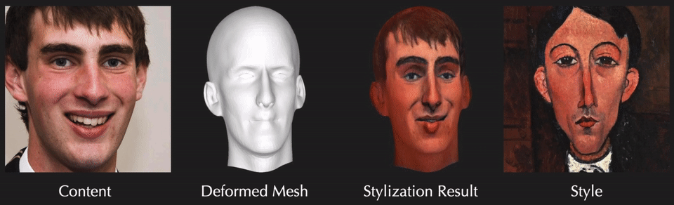
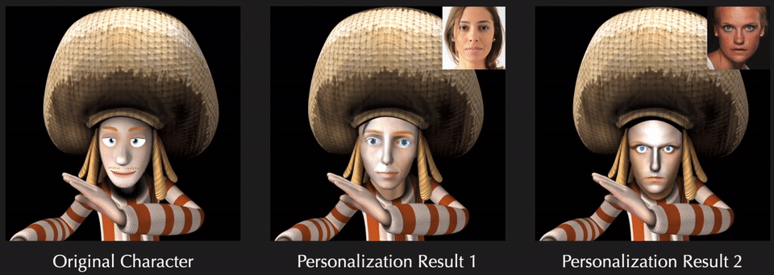

Exemplar-Based 3D Portrait Stylization
Fangzhou Han1#, Shuquan Ye1#, Mingming He2, Menglei Chai3, and Jing Liao1*
1City University of Hong Kong 2USC Institute for Creative Technologies 3Creative Vision, Snap Inc. #Equal Contribution * Corresponding Author
| Paper | Supplementary | Code |
Abstract
Exemplar-based portrait stylization is widely attractive and highly desired. Despite recent successes, it remains challenging, especially when considering both texture and geometric styles. In this paper, we present the first framework for one-shot 3D portrait style transfer, which can generate 3D face models with both the geometry exaggerated and the texture stylized while preserving the identity from the original content. It requires only one arbitrary style image instead of a large set of training examples for a particular style, provides geometry and texture outputs that are fully parameterized and disentangled, and enables further graphics applications with the 3D representations. The framework consists of two stages. In the first geometric style transfer stage, we use facial landmark translation to capture the coarse geometry style and guide the deformation of the dense 3D face geometry. In the second texture style transfer stage, we focus on performing style transfer on the canonical texture by adopting a differentiable renderer to optimize the texture in a multi-view framework. Experiments show that our method achieves robustly good results on different artistic styles and outperforms existing methods. We also demonstrate the advantages of our method via various 2D and 3D graphics applications.
Results
-
-
-
-

Applications
-
 Stylized Portrait Reenactment
Stylized Portrait Reenactment
-
Cartoon 3D Portrait Modeling
-
 Personalized 3D Character Animation
-
Geometry-Aware Image Style Transfer
Citation
@ARTICLE{han2021exemplarbased,
author={Han, Fangzhou and Ye, Shuquan and He, Mingming and Chai, Menglei and Liao, Jing},
journal={IEEE Transactions on Visualization and Computer Graphics},
title={Exemplar-Based 3D Portrait Stylization},
year={2021},
doi={10.1109/TVCG.2021.3114308}}
}